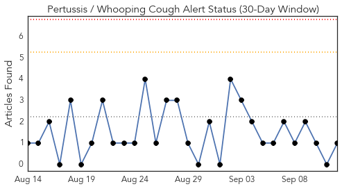
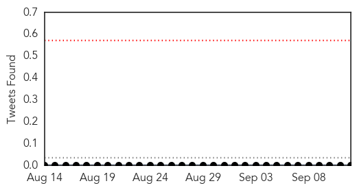
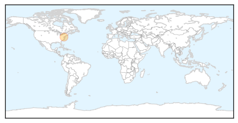
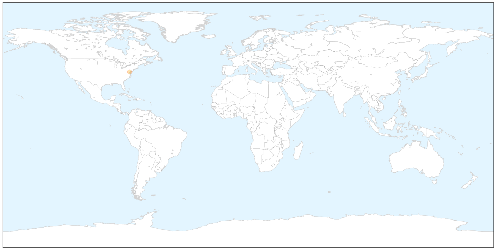
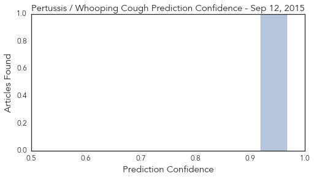
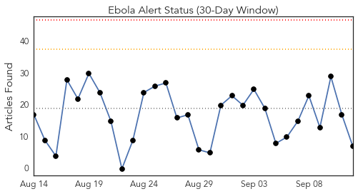
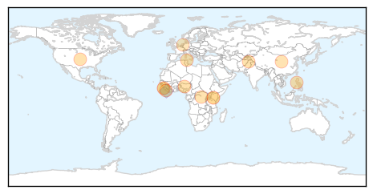
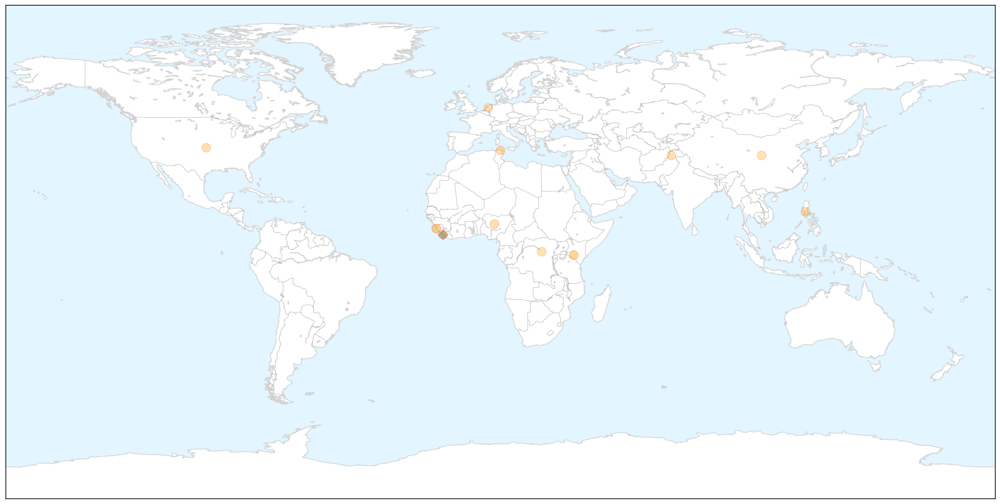
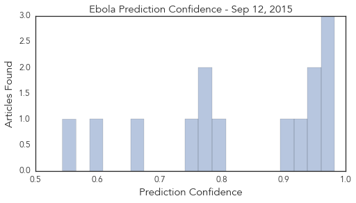

Pertussis
30-Day Web Trend
0 alerts, 0 warnings

30-Day Twitter Trend
0 alerts, 0 warnings

Article Locations

X

Article Confidences
Top Articles:
Top Tweets:
-
No tweets found for Sep 12, 2015
Ebola
30-Day Web Trend
0 alerts, 0 warnings

30-Day Twitter Trend
0 alerts, 0 warnings

Article Locations

X

Article Confidences
Top Articles:
- 0.982
- Philippines suspends macaque exports after 11 monkeys die of Ebola
- 0.981
- Akon, Angelique Kidjo, Fally Ipupa, Wax Dey. Magasco And More Artists Coming Together To Demand Action On Ebola
- 0.980
- Sierra Leone records 5th Ebola case - Xinhua
- 0.953
- Hajj – The Express Tribune Blog
- 0.938
- Medical crimes commited to depopulate Africa
- 0.930
- Philstar Mobile
- 0.903
- New Ebola test may help stop epidemic in West Africa
- 0.785
- LIBERIA: Save The Children Pledges To Sustain Partnership In Ebola Fight
- 0.781
- Welcome to the Expotimes News
- 0.769
- Dr. Kandeh Yumkella’s membership findings released & SLPP Scribe Reacts
- 0.750
- African scientists funded to seek cures
- 0.667
- $70 Million Funded For African Scientists to Raise the Quality of Its Scientific Output
- 0.597
- Liberia Loses another MD to Ebola
- 0.544
- Financial Constraints Deprive Liberians Pilgrimage to Hajj
Top Tweets:
- 0.754
- After Ebola: Survivors' Soccer Club Helps Erase Stigma In Sierra Leone - WBUR http://t.co/tMnE3GlOam ebola EVD
- 0.699
- Ici Une équipe de survivants d'Ebola qu'Ibrahim a formée en mobilisation… https://t.co/jKJlraj5gL
- 0.526
- Danny Glover Currently in Nigeria Filming Ebola Movie '93 Days' - Atlanta Black Star http://t.co/B5C9AD5Ijs ebola EVD
- 0.518
- ICYMI: Mental Health Stigma Powerful Memories And Ebola A Year Later - Huffington Post http://t.co/BqteaXgmal ebola EVD